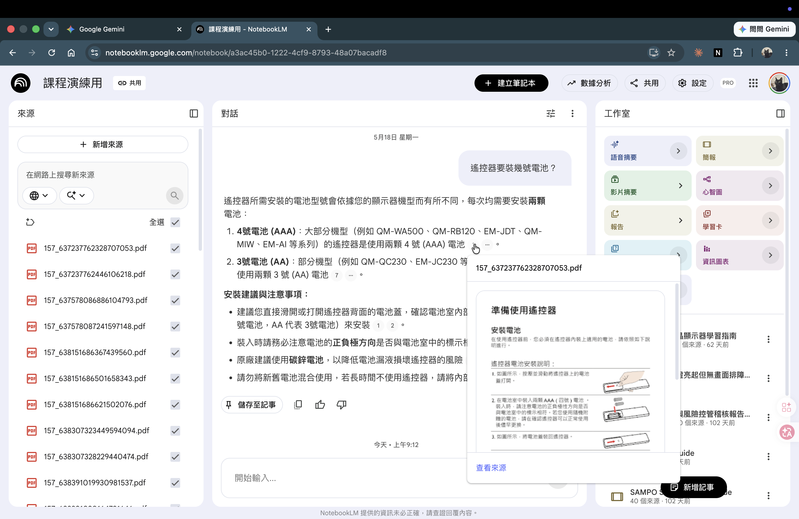
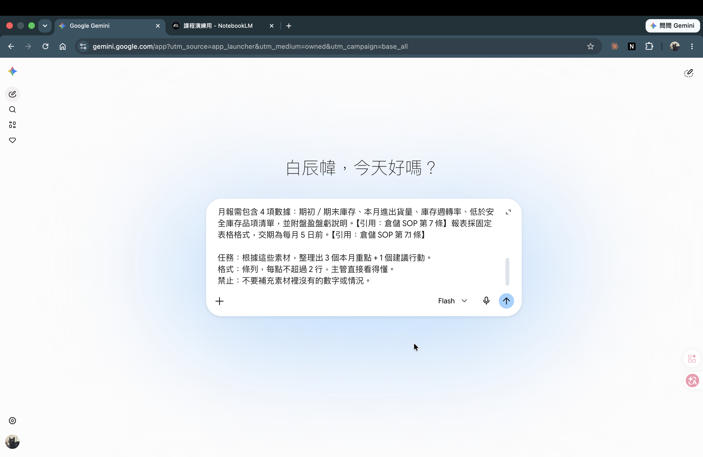

← 返回課程總覽
(06) Day 2 · 雙工具串接收尾
雙工具串接複習（個人場景）
CH1-3 學了 NotebookLM 查引用，CH1-4 學了 Gemini 整理彙報——今天把兩件事接起來，用阿翔的倉儲月報情境，從頭走通一遍。完成 2 個步驟就算過。
學習成果 · OUTCOMES
能用 NotebookLM 從個人知識庫取出 3 個有引用的查詢結果
能把查詢結果貼進 Gemini，生成一份可交主管的彙報段落
能走通雙工具串接工作流，理解兩工具各自的分工定位
(01)
破題：今天只做一件事
為什麼這很重要
兩個工具分開練過了。但分開練和「真的能用」之間，還差一個把它們串起來的完整動作。今天就補這一步。
這是今天的最後一個動作。CH1-3 學了怎麼用 NotebookLM 建個人知識庫、查引用。CH1-4 學了怎麼給 Gemini 素材、讓它整理成彙報初稿。這兩件事分開練過了——今天要把它們接起來，從頭走一遍。
先想一想
今天先問你一件事：
「如果主管明天要你交本月倉儲月報，
你手上有部門 SOP + 本月庫存數據，
你會先打開哪個工具？做什麼？然後呢？」
不用想太久，說第一個反應就好。
想完看這裡
常見回答：「先問 Gemini」「先查 SOP」「不知道從哪開始」。
其實三種答案都合理，但今天要確認一件事——SOP 裡的規定和歷史紀錄，用 NotebookLM 查比直接問 Gemini 準確，因為 NotebookLM 查的是你上傳的檔案，Gemini 沒有那份 SOP。先 NotebookLM 取材，再 Gemini 整理——順序定了，今天就照這個順序走一遍。
兩工具的分工：查「我自己的檔案」用 NotebookLM；整合成段落用 Gemini。順序記住，今天用一個完整情境走通。
(02)
為什麼要串接，不只用一個工具？
這個單元只有一個概念要釐清：為什麼要串接，而不是只用一個工具？
A
只用 Gemini
讓 Gemini 自己寫月報 → 它沒有你的 SOP 和本月數據，會自己補內容，數字不準。
B
只用 NotebookLM
查到引用，但它不擅長把資料整理成完整段落，格式需要自己手動。
C
串接（正確做法）
NotebookLM 取出「有引用來源的事實」，Gemini 把事實整理成「好看的彙報段落」。兩個各做擅長的事。
串接不是技術，是工作分工。NotebookLM 負責「取材有憑據」，Gemini 負責「排版好看」。
(03)
操作示範：阿翔的倉儲月報（完整走一遍）
情境：阿翔是弄一下精選商行的倉儲主管（35 歲）。本月要向主管彙報庫存現況，手上有部門倉儲 SOP + 本月庫存盤點資料。下面把兩個工具完整走一遍，你可以邊看邊跟著做。
步驟 1：NotebookLM 查詢 3 個引用
操作 NotebookLM
打開阿翔的個人知識庫 notebook（已上傳倉儲 SOP + 本月庫存盤點 CSV）
三個查詢一次查一個，查完一個先複製暫存一個，再查下一個——不要三個一起問：
查詢 1：安全庫存規定是多少？什麼情況要補貨？
→ 等回應、確認引用標記出現 → 複製整段回應（含引用）→ 暫存（步驟 1.5）
查詢 2：本月庫存水位和上個月相比，有什麼變化？
→ 等回應、確認引用對回數據 → 複製整段回應（含引用）→ 暫存
查詢 3：SOP 裡有沒有提到月報格式或要附上哪些數字？
→ 等回應 → 複製整段回應（含引用）→ 暫存
Expected Output
3 段 NotebookLM 回應，每段都有引用標記（角標或文內標記）。
例：「安全庫存量＝日均銷量×補貨前置天數×安全係數（暢銷品係數 1.5），低於安全庫存時系統觸發補貨警示、採購須於 2 個工作日內啟動請購【引用：倉儲 SOP〈安全庫存定義〉】。」
這 3 段就是你的取材結果，有引用代表查的是你上傳的檔案、不是 AI 自己補的。
中文文件 NotebookLM 可能回應速度稍慢，正常。若引用標記沒出現，補問一句「請附上引用來源」。

NotebookLM 回應裡的小數字就是引用標記，點下去會跳出對應的原文來源——你要看的是回應文字句尾那排小數字（角標），那就是「有來源」的證據。
步驟 1.5：把查詢結果暫存（最容易漏的一步）
查到的東西要先搬個地方放好，等下才貼得進 Gemini。這個搬運動作就是雙工具串接的關鍵，原子化拆給你：
1
框選 NotebookLM 回應全文（含角標）
用滑鼠從回應第一個字拖到最後一個字，連句尾的引用角標一起選起來。
2
複製：Ctrl/Cmd+C
Windows 按 Ctrl+C、Mac 按 Cmd+C。複製到的是剛剛框選的整段。
3
開一個空白記事本或 Google 文件
當作中繼站。不直接貼進 Gemini，是因為 3 段要先湊齊、也方便回頭檢查。
4
貼上：Ctrl/Cmd+V，三段之間空一行
查一段貼一段，三段都貼進來。段與段之間空一行，等下 Gemini 比較好分辨。三段湊齊，暫存就完成了。
步驟 2：Gemini 整合成彙報段落
切到 Gemini＝在瀏覽器開新分頁輸入 gemini.google.com，NotebookLM 那個分頁先不要關——步驟 3 要回去核對引用。
打開 Gemini 新分頁 · 貼入 prompt
在 Gemini 輸入框，先打角色那兩行，再把暫存的三段貼進來：
角色：你是倉儲主管，要寫一份給上級的本月庫存月報。
素材：以下是從部門 SOP 和本月盤點資料查到的事實（有引用來源）：
（這裡 Ctrl/Cmd+V 把步驟 1.5 暫存的 3 段貼進來）
任務：根據這些素材，整理出 3 個本月重點 + 1 個建議行動，
格式：條列，每點不超過 2 行，主管直接看得懂。
禁止：不要補充素材裡沒有的數字或情況。
這句「禁止補充」只是精簡版。要更穩，把 CH1-4 的三句錨定句（先列欄位＋筆數、只根據檔案沒有就說沒有、逐句標來源）一起貼上。也記得：查核分驗證期（設計 prompt 時逐筆核到不亂編）和量產期（之後大量跑只抽樣＋高風險必驗）——這種一次性月報屬驗證期，逐筆核。

Gemini 輸入框貼入素材後的樣子——角色在上、三段 NotebookLM 查詢結果在下，貼好但還沒送出。你要看的是段落之間有空行，確認是「貼進去」不是空白框直接送。
Expected Output
Gemini 輸出 3 個條列重點 + 1 個建議行動，每條回應都能對回步驟 1 的素材。
例：
· 3C 周邊本月入庫 1,200、出庫 1,180，庫存天數 18 天，週轉正常。
· 食品飲料盤損 -15（全品項最大），帳面與實盤有落差，建議優先複查。
· 服飾配件庫存天數 88 天、出庫僅 300，明顯滯銷。
建議：服飾配件週轉過慢、佔倉壓資金，建議本週與業務確認是否促銷或調整進貨。
「禁止補充素材裡沒有的數字」這行很重要——驗證方式：對比步驟 1 素材，找不到來源的那句，就是 Gemini 自己補的。
步驟 3：確認 + 調整
快速確認一下
看 Gemini 輸出的每一條，對比步驟 1 的 3 段素材：
→ 每條都能找到對應素材 ✓
→ 發現有一條 Gemini 用「建議」語氣補了額外推論 → 追問：「這條的依據是哪份資料？」
Gemini 回「根據常見庫存管理實務…」→ 這就是 AI 自己補的，不是阿翔的資料
→ 決定：刪掉這條，或改成「待確認：供應商交期需本週核實」
最後調格式：「把第 1、2 點合成一條，第 3 點拆出來單列」
你在這步做的「每條對回素材、抓出 AI 補的推論」，就是替每句話貼來源狀態：對得到素材 = ✅ 有來源；AI 自己補的 = 🧠 模型推論（要刪、或標「待人工確認」）。CH3 會把這個動作變成 Gem 每次回答自動附的欄位。
串接流程三步：步驟 1 NotebookLM 查詢取材（有引用）→ 步驟 1.5 暫存（複製到記事本）→ 步驟 2 Gemini 整理段落（用素材不補充）→ 步驟 3 自己確認每條都有來源。走完這幾步，月報草稿就有了。這套「查資料 → 整合成彙報」是行政、各部門通用的工作流——把阿翔換成電商怡君，素材換成活動數據，產出就是一份給主管的行銷活動成效彙報，步驟完全一樣。
(04)
換你上機：用自己的資料走一遍
用自己 CH1-3 建的個人知識庫 + CH1-4 的彙報場景，把三步走一遍。
🔄 雙工具串接固定流程卡 — 這張一路用到 CH3
- NotebookLM 找來源：查到帶引用的事實（= ✅ 有來源）
- 暫存：框選含角標、複製到記事本，3 段湊齊
- Gemini 整合：貼素材，要它「只用素材、不要自己補」
- 回頭確認：每條對回素材，抓出 AI 補的（= 🧠 推論，刪掉或標「待確認」）
- 標來源狀態：✅ 有來源／🌐 網路補充／🧠 模型推論／👤 待人工確認
下面照這張卡走一遍——卡住就先完成前 3 步（查 → 暫存 → 整合），確認與標狀態做不完可帶回家。
換你操作
步驟 1：打開你的 NotebookLM 知識庫
→ 想 3 個你準備向主管說的點（例：這個月的主要數字 / 有什麼規定要符合 / 有什麼需要行動的）
→ 一次查一點，查完一點確認有引用標記、複製暫存，再查下一點
步驟 1.5：暫存（別跳過）
→ 開一個空白記事本或 Google 文件
→ 把 3 段回應 Ctrl/Cmd+V 貼進去，段與段之間空一行
步驟 2：開新分頁進 Gemini（gemini.google.com），NotebookLM 那頁不要關
→ 輸入框先打角色 + 任務，再 Ctrl/Cmd+V 把暫存的 3 段貼進素材位置
→ 三件套 prompt：角色 + 素材（貼 3 段回應）+ 任務（條列 3 重點 + 1 建議）
→ 等輸出
完成 2 個步驟就算過。
不需要完整漂亮，3 個查詢有結果 + Gemini 有輸出，就是成功。
i
卡住了？
· 自己的知識庫裡查不到？先換問題（問太細 → 改問大概念；直接問數字 → 改問「有沒有提到」）
· Gemini 輸出內容很多？先看前 3 條，後面可以讓它「只保留最重要的 3 條」
· CH1-3 的知識庫還沒建好？用示範素材的阿翔版本（步驟 1 可下載）也能跟著走
自己檢查三件事：NotebookLM 有沒有點開引用標記、對回原文？Gemini 的 prompt 裡有沒有貼 NotebookLM 的查詢結果（不是叫 Gemini 自己想）？如果卡在步驟 1，先查更簡單的問題、把流程走通就好——完成度優先於精準度。
(05)
收尾回顧
回顧一下：你今天最有收穫的一個操作是什麼？
回顧一個就好
不用想整個流程，挑一個讓你「啊，原來這樣」的點記下來就好。
例：
· 「NotebookLM 的引用標記我之前一直沒點，今天才知道可以對回原文」
· 「原來要先查完再貼進 Gemini，不是直接叫 Gemini 去查」
· 「Gemini 輸出有一條是它自己補的，我後來刪掉了」
收尾
今天走完了。兩個工具你都碰過、串接流程你也走通一次了。
接下來 20 分鐘要寫工作流卡 v2——就是把今天這個流程寫成你下週在部門可以試的一個案例。不用想太複雜，就是「我要準備什麼報告 / 我手上有哪些資料 / 我想試試看串接」。
(06)
本單元素材與驗收
這個單元不需要新素材，直接沿用你在 CH1-3、CH1-4 已經建好的資料。如果那兩個單元還沒做完，用上面步驟 1 提供的阿翔示範檔（倉儲 SOP + 庫存盤點 CSV）跟著走也可以。
你會用到的素材（沿用前面單元）
| 來源 | 內容 | 用途 |
|---|
| CH1-3 個人知識庫 |
你自建的 NotebookLM notebook（3–5 份文件） |
步驟 1 查詢取材 |
| CH1-4 彙報資料 |
你在 CH1-4 生成的彙報場景（月報資料 CSV + 初稿） |
步驟 2 Gemini 整合對象 |
前提：CH1-3 知識庫至少有 2 份可查的工作文件、CH1-4 至少完成一次彙報初稿練習。還沒做完也沒關係，用上面步驟 1 的阿翔示範檔就能跟上。
驗收標準
完成 NotebookLM 查詢，且每條有引用標記
把查詢結果貼入 Gemini（而不是直接叫 Gemini 自己生成）
Gemini 輸出中能對應到查詢素材的至少 2 條（不需全部）
完成 2 個步驟就算過（不要求輸出精緻，流程走通優先）
(07)
商業情境案例
主角：阿翔，弄一下精選商行倉儲主管，35 歲，管 1 個倉、3 個兼職助理，每月要向採購部主管提交庫存月報。
情境：6 月底，阿翔要準備 6 月庫存月報。手上有兩份資料：
- 倉儲 SOP：上傳在 NotebookLM 的個人知識庫裡，裡面有安全庫存定義（係數公式）、盤點步驟與差異處理、補貨請購流程。
- 6 月庫存盤點表：也在同一個知識庫，記錄各品項出入庫狀況和結餘。
他要做的事：用 NotebookLM 查 3 個彙報要用到的點（規定 / 本月狀況 / 有沒有異常），把查詢結果貼進 Gemini，讓 Gemini 整理成 3 個重點 + 1 個建議。最後確認每條都有資料根據，不是 AI 自己補的。
(08)
動手練習題
題目：用你 CH1-3 建的個人知識庫 + CH1-4 的彙報場景，跑完串接三步：NotebookLM 查詢取材 → Gemini 整合成段落 → 快速確認。
預期成果：
- 至少 2 條 NotebookLM 查詢結果（有引用標記）
- 至少 1 段 Gemini 整合輸出（對應你的查詢素材）
完成標準：
- 步驟 1 完成：在 NotebookLM 查了至少 2 個問題，每題有引用標記
- 步驟 2 完成：把查詢結果貼進 Gemini，有輸出（內容好不好看不算在標準裡）
加分：
- 步驟 3 完成：看了 Gemini 的輸出，找到至少 1 條能對回查詢素材，找到至少 1 條是 AI 自己加的
- 試著告訴 Gemini 刪掉或修改那條沒有來源的句子
帶回家：你下週的工作流卡 v2
把今天的串接流程，套到你下週真的要做的一件事上——而且現在就先跑出第一步，不只是寫計畫。
不知道挑什麼？從這幾種常見的選一個（挑最近就要交、又有現成資料的）：
每月要交的報表／彙報（月報、週報、進度回報）
常被問的規定查詢（請假／報銷／流程，做成隨時查得到）
把一份長文件變成可用的東西（SOP → 通知、逐字稿 → 會議紀錄）
對外、要查到依據的東西（報價單、公告、合約條款確認）
先填上半張想清楚分工（哪步 NotebookLM、哪步 Gemini），再用你 CH1-3 建的知識庫（沒建好就用課程示範 SOP）實際跑一次第一步，把產出貼到下半張：
✍ 我的工作流卡 v2：先規劃、再實跑第一步（內容只存在你的瀏覽器，重整就清空，不會上傳）
寫完上半（計畫）＋跑完下半（第一步），你帶走的不只是想法，是一個已經開頭、下週接著做完就行的工作流。
(09)
常見錯誤 3 條
01叫 Gemini 直接查資料，跳過 NotebookLM
錯誤現象
你把 SOP 和盤點 CSV 直接上傳給 Gemini，叫它「根據這份資料整理月報」，完全跳過 NotebookLM。
原因
Gemini 也能上傳文件，你一時沒意識到兩者差異在哪。Gemini 讀文件沒有引用標記，生成的內容不容易判斷哪句是文件裡有的、哪句是 Gemini 自己補的。
解法
查「自己檔案裡有沒有這個規定 / 這個數字」，用 NotebookLM——引用標記讓你能確認來源。整理成段落才用 Gemini。不是 Gemini 不能用，是用對地方。
02NotebookLM 查詢結果沒複製就關視窗
錯誤現象
你在 NotebookLM 查完 3 個問題，覺得「看一下就好」，沒有複製結果就切到 Gemini，結果 Gemini prompt 裡的素材是你憑記憶打的，不是 NotebookLM 的原話。
原因
你不習慣「複製 → 貼上」這個中間步驟，以為查完直接問 Gemini 就能工作。
解法
步驟 1 結束後，先把 3 段查詢結果複製進記事本或空白 Google 文件暫存，確認貼妥再切到 Gemini。步驟之間的暫存不是多此一舉，是確保 Gemini 用的是有引用的素材、不是你的記憶。
03Gemini 輸出有一條「感覺對」，沒確認就直接交
錯誤現象
Gemini 輸出 4 條重點，看起來都合理，你就直接存起來當月報。其中有 1 條是「根據常見管理實務，建議維持安全庫存 2 倍緩衝」——這條 SOP 裡沒有，是 Gemini 補的。
原因
Gemini 補充的句子語氣流暢、「聽起來合理」，你沒意識到它是推論而非文件裡的規定。交出去後主管問「哪條 SOP 寫的」，答不出來。
解法
每條輸出對應回步驟 1 的查詢結果——能找到對應素材的才留，找不到來源的標「待確認」或直接刪。不是說 AI 補的一定錯，是你交出去的東西你要能確認。
(10)
檢核題 2 條
Q2（應用驗證）：
情境：怡君是電商營運經理，要準備本週電商績效報告。她在 NotebookLM 查了 3 個問題，但其中一個查詢回應沒有出現引用標記，只有一段 NotebookLM 自己說的說明文字。她把這 3 段全部貼進 Gemini，讓 Gemini 整理出 3 個重點。
請判斷：(1) 沒有引用標記的那段查詢結果有什麼問題？(2) 她應該怎麼處理？
查看答案與解析
(1) 問題：沒有引用標記表示 NotebookLM 這段回應可能不是來自上傳的文件，而是根據一般知識生成——等同於 Gemini 補充的內容，不能作為有根據的報告依據。貼進 Gemini 後，Gemini 的輸出也會包含這段無來源的內容，導致報告裡混入無法追溯的推論。
(2) 處理方式：
· 退回 NotebookLM，對那個查詢追問「請附上引用來源，對應文件中的哪個段落」
· 若 NotebookLM 回應「文件中未找到相關內容」——這正是引用標記缺失的真正原因：文件裡沒有，AI 自己補的
· 處理選項：(a) 換一個問法重問，看文件裡有沒有類似資訊；(b) 確認文件裡確實沒有 → 這個點不要放進彙報（或標「待補資料」）
· 不應該做的：直接貼進 Gemini 當素材，這會讓整份彙報的可信度降低